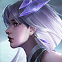

상대 영웅 상세 대응
镜
한 줄: 분신을 빼고, 본체를.
상대 특성
분신 기동 암살자 계열. 분신과 이동으로 진입·이탈하며 폭딜을 넣고, 궁극기로 공간을 가른다.
라인전 대응
징의 분신 위치를 확인하고, 이동기가 빠진 뒤 2스킬로 붙잡는다.
교전·한타
아군 딜러에게 붙는 징을 2스킬로 끊고, 분신이 사라진 뒤 점사한다.
하지 말 것
징의 분신에 스킬을 낭비하는 것.
상세 스킬
4개중국판 공식 스킬 설명을 한국어로 번역했습니다. 스킬명·쿨다운·수치는 패치에 따라 달라질 수 있으므로 게임 내 최신 설명을 우선하세요. 영웅 이름은 중국판 표기를 유지합니다.
-
패시브
캐스트 거울
본체와 거울상이 적에게 피해를 입힐 경우, 적에게 두 종류의 표식을 남깁니다. 적이 동시에 두 종류의 표식을 가지고 있을 경우, 파편화를 유발하고 잃은 체력의 4%에 해당하는 물리 피해를 입게 됩니다. 동시에 미러 [열린 칼날] 및 하늘을 깨다의 쿨다운이 새로 고쳐집니다. 이 효과가 발동된 후 거울은 5초 동안 일시적으로 이 패시브 효과를 잃게 되며, 궁극기 이동 시간은 2초입니다. 거울상은 본체의 피해과 회복의 30%를 발생시킵니다. 거울상과 본체 사이의 거리가 멀수록 더 많은 피해와 회복량이 발생하며, 이는 본체의 최대 80%까지 증가할 수 있습니다. (거울상은 본체의 방어 타워에 대한 피해를 10%만 입힐 수 있습니다.)
-
1스킬
카이펑
빠르게 앞으로 돌진하여 경로에 있는 적에게 180/216/252/288/324/360(+100% 추가 물리 공격력)의 물리 피해를 입히고 30% 둔화시킵니다. 동시에 다음 기본 공격이 강화되며, 2개의 추가(+10% 물리 공격력) 물리 피해를 입힙니다. 패시브: 필드에 거울상이 없을 때 거울상이 생성되어 함께 돌진합니다. 거울상이 2초간 존재하면 궁극기 동작을 제외한 본체의 모든 동작을 복사합니다.
-
2스킬
하늘을 깨다
주변 적들에게 40/95/150/205/260/315(+60% 물리 공격)의 물리 피해를 입히고 1초 동안 50% 부패 가속을 얻습니다. 적중한 각 대상은 60/76/92/108/124/140(+24% 물리 공격)의 체력을 회복합니다. 두 번째 대상부터는 회복량이 25%로 감소됩니다. 패시브: 필드에 거울상이 없을 때 거울상을 생성하여 함께 공격합니다. 거울상이 2초간 존재하면 궁극기 동작을 제외한 본체의 모든 동작을 복사합니다. ——야오와 내가 어렸을 때부터 함께 연습해온 동작.
-
3스킬
그림자를 보아라
앞으로 날아가 길에 있는 적을 1초 동안 거울 공간 중앙으로 끌어당깁니다. 가장 먼 거리에 도달하면 거울 공간이 열립니다. 거울 양쪽에서 본체와 거울상이 날아옵니다. 이 기간 동안 본체와 거울상은 서로의 위치로 돌진하게 된다. 비행 0.05초마다 본체와 거울상이 10/15/20(+4% 물리 공격력)의 체력을 회복합니다. 교환 후 1.5초의 비활성화 시간이 발생합니다. 적에게 피해를 입힌 경우 즉시 다시 잠금 해제됩니다. 거울 공간은 10초 동안 존재하며, 거울은 그 안에서 받는 피해를 10/15/20% 감소시킵니다. 거울 공간을 일찍 떠나면 거울 공간이 파괴됩니다. 거울장이 형성된 후 거울장 가장자리에 8개의 거울 조각이 생성됩니다. 이 기간 동안 본체나 거울상이 적에게 피해를 입힐 경우 가장 가까운 파편이 적을 향해 날아가며 잃은 체력의 2%에 해당하는 물리 피해를 입힌다.
탱커 기본: 스킬·유세·콤보·빌드·라인전 원칙은 元流之子 탱커 기본 운영에서 먼저 확인할 수 있습니다. 이 페이지는 镜 상대에 맞춘 대응입니다.